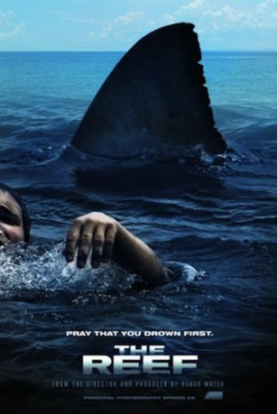

#4640 The Reef - Schwimm um dein Leben
Alternativ: The Reef
 
 IMDB-Wertung: 5.8 / 10
IMDB-Wertung: 5.8 / 10  Metascore: 0
Metascore: 0 
Eine Gruppe junger Leute, zwei Damen und drei Herren, bricht mit der Segelyacht auf zu einer Tauchexpedition am großen australischen Barriereriff. Nach ein paar Abenteuern mit der lokalen Tierwelt kommt es zwischen zwei Zielen zum Unglück: Das Boot läuft auf einen Felsen auf. Während einer auf dem sinkenden Schiff die Stellung hält, versuchen die anderen, schwimmend die nächste Insel zu erreichen. Schon nach kurzer Zeit müssen sie feststellen, dass sie dabei nicht allein sind: Ein großer Weißer Hai folgt der Gruppe und wird zunehmend neugieriger.
Jahr: 2010
Dauer: 84 Minuten
FSK: 12
Land: Australien Studio: Face to FaceTonspuren: DTS - ,
Untertitel: Deutsch,
Auflösung: 1080p (1920x816) Größe: 6471 MB
Genre: Horror, Thriller
Regisseur: Andrew Traucki
Drehbuch: Gee Malik Linton
Soundtrack:
Darsteller:
- Damian Walshe-Howling als Luke
- Gyton Grantley als Matt
- Adrienne Pickering als Suzie
- Zoe Naylor als Kate
- Kieran Darcy-Smith als Warren
- Mark Simpson als Shane
Datei: X:\2010(N-Z)\Reef - Schwimm um dein Leben, The (2010, FSK12, 1920x816).mkv seit 26.10.2016
Festplatte: HD 2010(G-Z)-2011(A-F)
 Es gibt insgesamt 115 Filme in der Gruppe '2010(N-Z)'
Es gibt insgesamt 115 Filme in der Gruppe '2010(N-Z)'